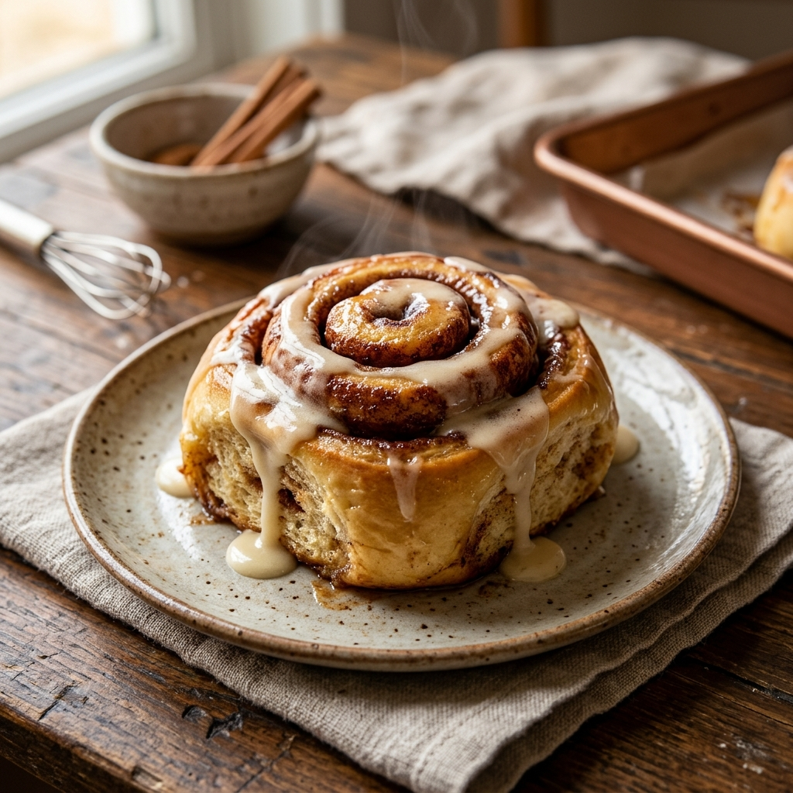

Meu primeiro post

por Jully A.B
Seja bem-vindo ao meu novo post! Vou compartilhar uam das minhas receitas favoritas.😆
♡ Cinnamon Rolls ♡
Rolinhos de canela com cobertura cremosa de cream cheese
Rendimento: 12 unidades |
Tempo: aproximadamente 3 horas |
Dificuldade: média
✧ Ingredientes
1. Para a massa
- 500 g de farinha de trigo (aproximadamente 4 xícaras)
- 240 ml de leite morno
- 10 g de fermento biológico seco
- 80 g de açúcar
- 1 ovo inteiro + 1 gema
- 80 g de manteiga sem sal em temperatura ambiente
- 1 colher (chá) de essência de baunilha
- 1/2 colher (chá) de sal
2. Para o recheio
- 120 g de açúcar mascavo
- 2 colheres (sopa) de canela em pó
- 80 g de manteiga sem sal em temperatura ambiente
3. Para a cobertura
- 150 g de cream cheese
- 50 g de manteiga sem sal em temperatura ambiente
- 100 g de açúcar de confeiteiro
- 1 colher (chá) de essência de baunilha
- 1 a 2 colheres (sopa) de leite, se necessário
✧ Modo de preparo
1. Preparando a massa
- Em uma tigela, misture o leite morno, o fermento biológico e uma colher do açúcar. Deixe descansar por 5 a 10 minutos.
- Acrescente o restante do açúcar, o ovo, a gema e a essência de baunilha.
- Adicione a farinha de trigo aos poucos e misture.
- Acrescente o sal e comece a sovar.
- Incorpore a manteiga gradualmente, sovando até obter uma massa lisa, elástica e levemente pegajosa.
- Sove por aproximadamente 10 a 15 minutos.
- Coloque a massa em uma tigela untada, cubra com um pano limpo e deixe descansar por 1 a 1h30, ou até dobrar de tamanho.
2. Preparando o recheio
- Misture o açúcar mascavo com a canela em uma tigela.
- Reserve a manteiga em temperatura ambiente para facilitar a aplicação.
3. Modelando os rolinhos
- Abra a massa sobre uma superfície levemente enfarinhada, formando um retângulo de aproximadamente 40 × 30 cm.
- Espalhe a manteiga por toda a superfície.
- Distribua uniformemente a mistura de açúcar mascavo e canela.
- Enrole a massa pelo lado mais comprido, formando um rocambole.
- Corte em 12 fatias de tamanho semelhante.
- Disponha os rolinhos em uma assadeira untada, deixando um pequeno espaço entre eles.
- Cubra e deixe descansar por mais 30 a 45 minutos, até ficarem visivelmente fofinhos.
4. Assando
- Preaqueça o forno a 180 °C.
- Leve os cinnamon rolls ao forno por aproximadamente 20 a 25 minutos.
- Retire quando estiverem levemente dourados. Evite assar demais para não perderem a maciez.
- Deixe descansar por alguns minutos antes de colocar a cobertura.
5. Preparando a cobertura
- Bata o cream cheese e a manteiga até formar um creme homogêneo.
- Acrescente o açúcar de confeiteiro e a baunilha.
- Misture até obter uma cobertura lisa e cremosa.
- Se estiver muito consistente, adicione um pouco de leite.
- Espalhe generosamente sobre os cinnamon rolls ainda mornos.
✧ Segredos para um Cinnamon Roll perfeito
♡ Leite morno: nunca use leite quente, pois temperaturas elevadas podem prejudicar o
fermento.
♡ Não exagere na farinha: uma massa levemente pegajosa resulta em rolinhos mais macios.
♡ Sovação: é fundamental para desenvolver o glúten e deixar a massa elástica e fofinha.
♡ Fermentação: respeite o tempo de crescimento. A massa precisa dobrar de tamanho na
primeira fermentação.
♡ Não asse demais: retire assim que estiverem levemente dourados.
♡ Cobertura: coloque o cream cheese enquanto os rolinhos ainda estiverem mornos para
conseguir aquela textura irresistivelmente cremosa.
✧ Como armazenar
- Temperatura ambiente: até 1 dia, em recipiente bem fechado.
- Geladeira: até 4 dias, bem armazenados.
- Congelador: até 2 meses, preferencialmente sem a cobertura.
Para recuperar a maciez, aqueça por alguns segundos no micro-ondas. Se estiverem refrigerados, aqueça até ficarem completamente mornos.
✧ Dica especial
Se quiser aquele resultado de cinnamon roll de cafeteria americana,
coloque aproximadamente 60 ml de creme de leite fresco sobre os
rolinhos já fermentados, imediatamente antes de assar.
Isso ajuda a deixá-los ainda mais úmidos e macios.
Não é obrigatório, mas faz uma diferença deliciosa!
♡ Uma massa fofinha, recheio de canela e cobertura cremosa. Feito com carinho, servido com amor! ♡